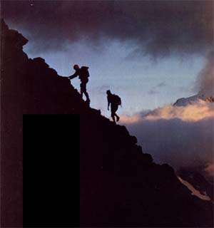
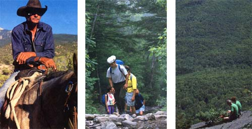
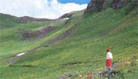
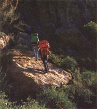
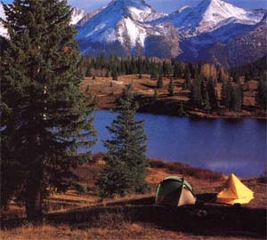
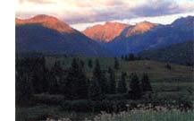

Go Gently Into Good Land
A hiking guide from the staff of the National Outdoor Leadership School, including backcountry travel, campsite selection and use, waste and garbage disposal.
By the Staff of the National Outdoor Leadership School
July/August 1990
Founded in 1965 by Paul Petzoldt, the National Outdoor Leadership School, with headquarters in Lander, Wyoming, continues to he a champion of backcountry ethics and a pioneer in techniques of minimal impact wilderness travel and camping. The article above is adapted from an appendix prepared by the school's staff for a USDA Forest Service publication (General Technical Report INT-265, Low-Impact Recreational Practices for Wilderness and Backcountry, by David N' Cole,1989), and is used here with permission..
America is still a land of undeniably beautiful wilderness areas, providing quality recreational experiences. But if we are to maintain the ecological integrity of such areas, it's imperative that every visitor tread lightly. As an introductory guide to minimal-impact backcountry travel and camping, we recommend the following practices.
Backcountry Travel
1.MOVE QUIETLY AN THE WILDERNESS By doing so, you'll be more aware of the environment, wildlife will be less disturbed and other visitors will appreciate your courtesy.
2.WHEN TRAVELING WITH A LARGE PARTY, split up and hike in groups of no more than six. Four is the optimum number, especially for cross-country travel.
3.IF POSSIBLE, visit popular areas at times when use levels are lowest-during the off-season and on weekdays. However, avoid wilderness travel at times when the environment is particularly fragile: during spring snowmelt, for example, when the soil is muddy and easily imprinted.
4. PACK OUT EVERY SCRAP of your own litter plus as much of that left by others as you can find room for (litter attracts more litter. Spruce up the wilderness on the way out, when your pack is light.
5. GRANT THOSE WHO COME AFTER YOU a sense of discovery by leaving rocks, plants and other natural objects as you found them. Enjoy an occasional edible plant, if you choose, but be careful not to deplete the veg etation in any one area, or to disturb plants that are rare or don't reproduce in abundance (such as many edible lilies).
6. RESPECT THE PRIVACY and needs of wild animals and birds. When tracking wildlife for a photograph or a closer look, stay downwind, avoid sudden movements and never pursue, crowd or otherwise harass the animals. Minimizing disturbance is particularly important at birthing and nesting sites, as well as at watering holes and feeding grounds, and is critical in winter, when wild animals are already dangerously stressed. Learn as much as you can about local birds and animals and their needs before entering a wilderness area. Even though some animals may be quite bold and curious, resist the temptation to feed them: Even in low-use areas, providing handouts to wildlife can alter feeding habits, leading to unnatural behavior and the endangerment of the very animals you wish to befriend.
7. SHORTCUTTING TRAIL SWITCHBACKS causes gullying and erosion. When traveling on established trails, hike in single file and stay on the path. Walking outside the tread-in order to travel abreast of your companions or to avoid obstacles such as mudholes, snowbanks and fallen logs-breaks down the trail's edges and leads to widening and to the creation of multiple, parallel trails. If a trail is impassable at a certain point, try to get around the obstacle by walking on rocks, snow, uncrusted sand, downed logs or similar nonvegetated footing. When you return to civilization, notify the government agency responsible for the area-Forest Service, Bureau of Land Management, or whatever-that trail repair is needed.
8. WHEN TAKING A BREAK, move off the trail and look for a durable rest area-such as a rock outcropping or a dry, grassy clearing. By taking a few extra steps, you'll enjoy more natural surroundings and also avoid being disturbed by (and disturbing) other hikers on the trail.
9. SHOULD YOU MEET HORSES on a trail, move aside and allow them plenty of room to pass. Since horses and mules are skittish, your entire party should move off to the same side of the trail-if possible, the downhill side-and stand quietly until the animals have passed. Sometimes it helps to speak, in a calm voice, to the first rider, giving polite notice of your presence.
IO. CROSS-COUNTRY (off-trail) travel is acceptable only in small groups, and even then only if fragile areas are avoided. When group hiking off-trail, spread out (rather than walking in single file to minimize the amount of trampling any one place receives and to keep from establishing paths. The exception to this is when extremely fragile surfaces-such as cryptogamic ("crusted") desert sand (a living organism that helps to prevent wind and water erosion)-cannot be avoided. These surfaces should be crossed in single file so only one trail is created .
11. DO NOT BLAZE TREES, build rock cairns, or leave messages scrawled in the dirt. Such markers can be harmful to the local ecology and disrupt the wilderness experience of other travelers.
12. TO AVOID disturbing the unstable soil of steep terrain, try walking on large rocks or patches of snow. If a slope is so steep that you find it necessary to poke your boots into the soil for a grip, try to find another route. If this isn't possible, each member of the party should take a separate path to minimize the damage. When descending scree - strewn slopes (those with loose rocks), move slowly and carefully; rapid des cents can cause rock slides.
I3. PETS ARE BEST LEFT AT HOME. But if hiking with pets (prohibited in most national parks and monuments, and officially discouraged on many other public lands), keep them under restraint. If your pet should defecate on a trail, use a couple of sticks to pick up the mess and move it well away from the path. Never allow dogs traveling with your party to harass wildlife or other campers-either directly or from a distance-by barking.
Campsite Selection and Use
IN SEARCHING FOR A CAMPSITE, your goal is to find an area that will not be damaged by your stay. Since fire rings and other evidence of previous visitation tend to attract more of the same, camp at a pristine site only if you are willing and able to leave absolutely no sign of your stay. Avoid critical wildlife habitats and fragile terrain such as lake shores and stream banks. When possible, it's always better to camp at established sites where your stay will cause no additional damage.
Lightly impacted sites -those that have obviously been used a time or two but which remain largely undamaged - should always be avoided; such sites, if left alone, might eventually recover, but will deteriorate rapidly with further use. (Before passing by such a site, though, take a minute to pick up any bits of litter lying about, break up fire rings and bury or scatter the coals, and do anything else you can to repair the damage.)
In camp, proper etiquette differs drastically between natural and established sites. At a pristine site, your objective is to minimize the trampling of a particular area. Here are some general guidelines:
1. SEEK OUT A CAMPSITE that shows no evidence of previous use and that is secluded enough to escape being spotted (and, thus, reoccupied and further damaged) by future wayfarers. Unvegetated surfaces (rock, gravel, uncrusted sand, or snow) are the most durable places to set up tents and establish the kitchen. Forest duff is acceptable if it's possible to avoid crushing any plants or tree seedlings. Grassy areas and dry meadows can also make suitable pristine campsites.
2. IF TRAVELING WITH A GROUP, pitch your tents well apart and try to avoid establishing "highways" between them.
3.WEAR SOFT-SOLED SHOES around camp, and take a different path each time you go for water or to the latrine. Camp no more than a single night in any one place, and camouflage the site by covering any scuffed-up places with duff or other native materials before leaving. At all campsites, established or pristine, avoid digging "gutter" trenches around tents, cutting standing trees or live branches, or uprooting plants or embedded rocks. If you clear your sleeping spot of surface debris (small rocks, twigs, pinecones, etc.), "redebris" the area before leaving. At high-impact sites, it's entirely appropriate to dismantle inappropriate user-built structures such as multiple fire rings, bench seats and tables.
Established - that is, regularly used -campsites are preferable to pristine sites for large groups, for multi-day stays, or for when you wish to build a ground fire. Keep your tents, kitchen area, fires and movements within the bounds of the existing trampled area. When breaking camp, leave the site clean and attractive for the next group that uses it -even if you didn't find it that way.
WASTE AND GARBAGE DISPOSAL
CERTAINLY, minimal impact camping requires a good bit more planning, thought and energy than the old "throw as you go" school of outdoor etiquette. But the rewards-the pride of doing a thing right, plus helping to ensure continued unrestricted access to clean, attractive, healthy wilderness-are well worth the extra effort. Here are some general guidelines:
1. NOTHING BUT WASH WATER and fish entrails should be scattered on the ground, and burning of nonpaper trash should be minimized. Burial of food scraps and other waste is inadvisable, since wild animals are certain to dig them up and scatter them about.
2. WASTEWATER FROM COOK ING and washing dishes should be drained off either in the corner of a fire pit or well away from camp and any source of surface water. Disperse large quantities of wastewater widely or dig a sump hole.
3. LITTER AND FOOD SCRAPS can be minimized by careful pretrip planning. Food should be removed from cans, bottles and foil, measured out to eliminate leftovers, and then stored in resealable plastic bags. All food scraps should be packed out when leaving the campsite, since complete cremation is difficult.
|
 ©SUSAN LAPIDES / ©SUPERSTOCK LEFT: Move quietly in the wilderness. Grant those who come after you a sense of discovery by leaving rocks, plants and other natural objects as you found them. MIDDLE: When group hiking off-trail, spread out rather than walking in single file. RIGHT: The best saga that you have bees in a wild place is to leave no sign at all. |
 ©SUSAN LAPIDES LEFT: Should you meet horses on the trail, move aside and allow them plenty of room to pass. |
 ©KATHLEEN NORRIS COOK |
|
 ©KATHLEEN NORRIS COOK |
 ©KATHLEEN NORRIS COOK |
 |
|
 |
|
|